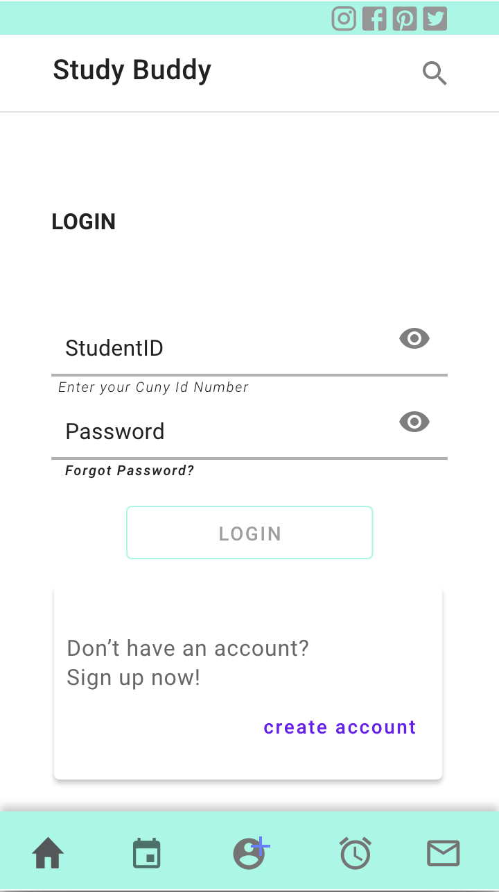
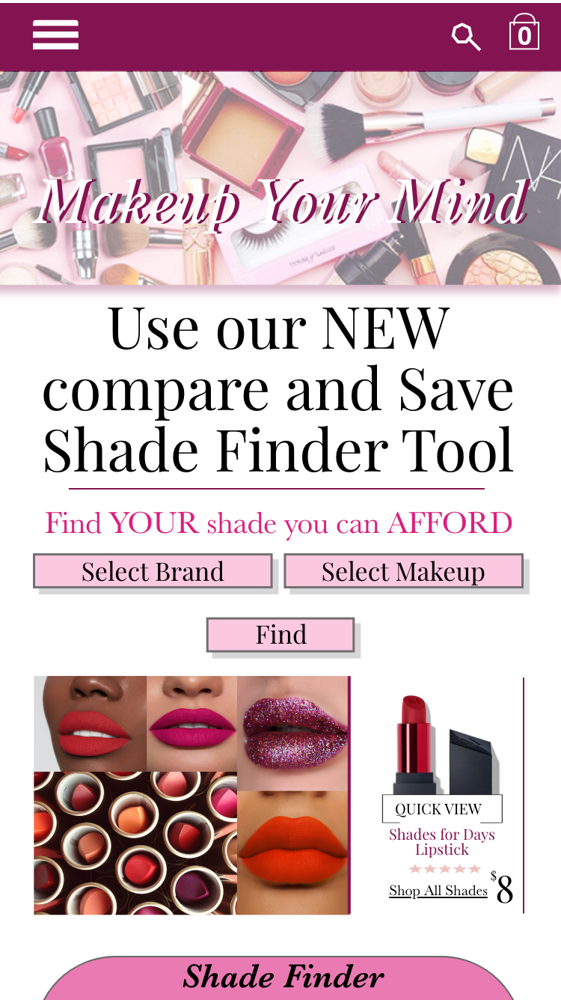
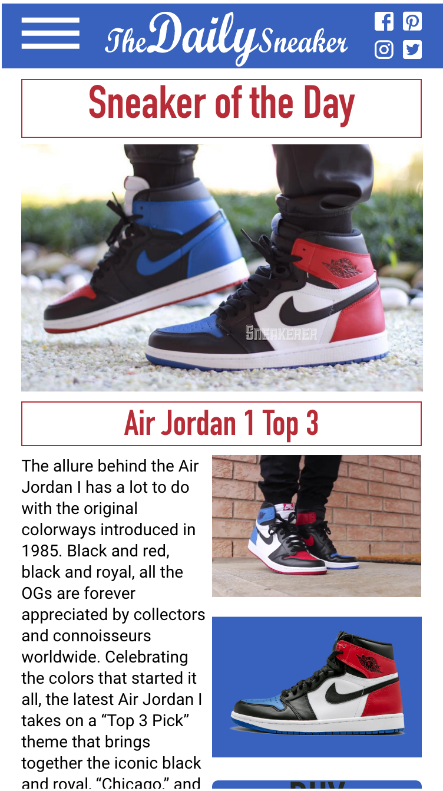

XD
prototyping tool for user experience and interaction design. Course related projects, creating innovative user friendly interfaces
Study Buddy App
Created an app for bmcc students to help find people who took the same class in a previous semester to help you study. The app is able to create a profile as a tutor or a "buddy" and then allows you to upload your schedule and link to people who tutor for a specific class. The app also has time management like alarms and timers, also you can message within the app.
 |
 |
Makeup Your Mind Website
Created a website and Mobile site Prototype for a school project, the idea was a makeup company, with one of the design specs of having an advanced shade finder that uses a large database of makeup that can compare shade ranges of a variety of products and can compare prices so you can find the exact match for a lesser price.
 |
 |
The Daily Sneaker
Recreated a mobile responsive webpage to help find sneakers and get daily updates on new sneaker releases. was given assets and i had to recreate the layout for web and mobile.
 |
 |